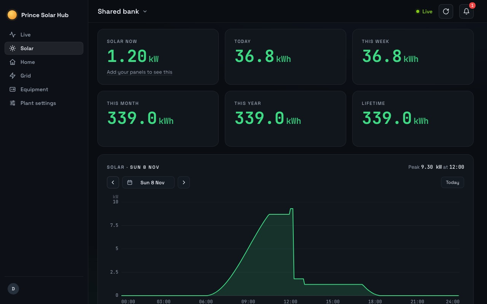

Gaps in your SunSynk history?
A gap means the logger sent nothing for those hours, so SunSynk has nothing to show. Owners report that the gap stays. If the totals look wrong rather than missing, check the time zone.

Why it happens
- The logger was offline. No Wi-Fi or a router without power. See logger keeps going offline.
- A new or moved logger. Owners report history going missing after a logger was replaced or taken off the plant.
- The wrong time zone. If the inverter, app or router are on different time zones, readings land on the wrong day and totals look wrong.
What to do
- Keep the logger online. Put the router on backup power.
- Don’t remove the logger from your plant unless you must.
- Set the time zone to South Africa (UTC+2) on the inverter, in the app and on the router.
How Prince Solar Hub helps
It keeps its own copy of every reading it takes. On Home and Family plans you keep every day since you joined, plus the 60 days before. Pick any day to see it hour by hour, or download any range to Excel or Google Sheets.
More help
- SunSynk app not updatingUsually the logger has lost its Wi-Fi.
- SunSynk app error or login failedUsually SunSynk’s servers, not your system.
- SunSynk logger keeps going offlineWeak Wi-Fi, a new router, or a power cut.
- Get an alert when the power goesWhy the SunSynk push is easy to miss.
- Share your SunSynk plant as a VisitorLet someone see your system without changing it.
Questions
Can SunSynk fill a gap later?
Owners report that it doesn’t. If the logger sent nothing, there is nothing to fill it with.
How far back does Prince Solar Hub go?
When you connect, it brings in your last 60 days from SunSynk. From then on, Home and Family plans keep your full history.
See your SunSynk live.
Free for one plant. Nothing to install.
Try it freeSee pricing